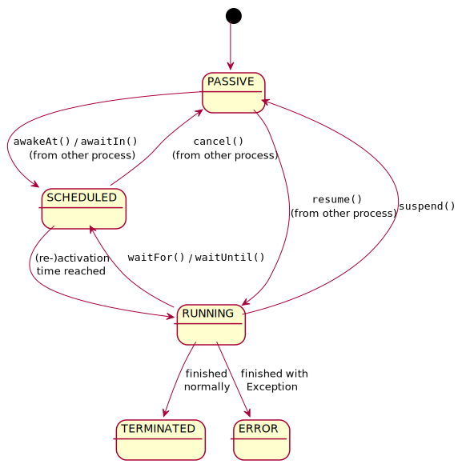

@Override
protected void lifecycle() throws MightBlock {Process-oriented Simulation
Table of Contents
This page describes how to implement the M/M/1 model using jasima’s process-oriented features. The code accompanying this page can be found in the MM1ModelProcesses.java, available in package examples.simulation.process of project_template_standalone. This page assumes that the reader is already familiar with the event-oriented version and simulation basics as described in eventOriented.html.
Depending on the model, sometimes an event-oriented or process-oriented modeling can lead to more "natural" and concise models. They are equivalent in what can be modeled, so they are only different "flavors" of discrete-event simulation.
Comparing MM1ModelProcesses.java and MM1ModelEvents.java the following important differences can be seen. First, our simulation component is derived from SimEntity instead of SimComponentBase. In fact SimEntity inherits from SimComponentBase and adds a "lifecycle process" to it. This process describes the whole lifetime of a SimEntity in the method lifecycle().
The main difference between process- and event-orientation is whether or not the simulation time can change while executing a method. In the event-oriented version this can never happen, the simulation time can only change after the current event-handling method was fully executed. This is different when using process-orientation: a method can stop execution somewhere in its control flow by calling special methods such as waitFor(double). This will stop executing the method and only resume after the waiting time has elapsed. Therefore calling simTime() before the waitFor() call will return a different simulation time than calling it after the wait. A simulation process can also suspend() its execution, waiting for some unspecified time and only resuming execution when some other process is resuming its execution calling the resume() method.
MightBlock marker Exception
All methods in jasima that are using process-oriented features have to be marked by declaring them to throw the checked Exception MightBlock. An example for this is the lifecycle() method:
This Exception MightBlock is never actually thrown and should never be caught by simulation code. It merely marks some code to use process-oriented features, which is important to document and to bear in mind when creating simulation components. It is a checked exception, so the compiler forces us to re-throw it whenever another process-oriented method is called.
Process States
A simulation process can be in one of multiple states. When is is executing it is in RUNNING state. It can also be PASSIVE or SCHEDULED when waiting to be activated again. After the process finished, i.e., the method implementing it returned, the process can be in one of the terminal states TERMINATED or ERROR. A state chart of theses states and the methods triggering transitions between them is shown in the figure Main Process States and Transitions below.

Figure 1. Main Process States and Transitions
Process-oriented M/M/1 example
Coming back to MM1ModelProcesses.java we can see that there are actually two SimEntities involved, on one hand the class MM1ModelProcesses itself, but now the server is modeled as a separate entity in the inner class Server. The initialization of the simulation and the arrival of new jobs is taken care of by MM1ModelProcesses. It is also maintaining the queue of waiting jobs.
Looking at the server’s lifecycle() method shows some typical pattern. It starts with some initializations and then there is an endless loop. Each iteration of the loop models the processing of a single job. In this loop there are two methods used that make use of process-oriented features (and are hence marked with MightBlock).
@Override
protected void lifecycle() throws MightBlock {
// init
DblSequence serviceTimes = initRndGen(new DblExp(INTER_ARRIVAL_TIME * trafficIntensity), "services");
numServed = 0;
// endless processing loop
while (true) {
Integer job = q.take(); (1)
System.out.println("start processing job " + job + " at time=" + simTime());
double st = serviceTimes.nextDbl();
waitFor(st); (2)
numServed++;
System.out.println("finished processing job " + job + " at time=" + simTime());
}
}| 1 | q.take() is blocking until there is a job to be taken |
| 2 | waitFor(st) is waiting until the service time has elapsed |
Processing consists of taking a waiting job from the queue. If non is available, the server becomes PASSIVE, so execution is paused until the next job was added to the queue by the main process MM1ModelProcesses (q.put() in line 76). The server’s print statement is therefore only executed when there is a job. Processing the job consists of calculating the service time and waiting until it has elapsed. After that the server is incrementing a statistics counter prints some message and then tries to continue with the next job.
The lifecycle() method of MM1ModelProcesses is structured similarly:
@Override
protected void lifecycle() throws MightBlock {
// init
q = new Q<>();
addComponent(new Server());
numCreated = 0;
DblSequence iats = initRndGen(new DblExp(INTER_ARRIVAL_TIME), "arrivals");
// creation of jobs
for (int n = 0; n < numJobs; n++) {
waitFor(iats.nextDbl());
System.out.println("created job " + n + " at time=" + simTime());
q.put(n);
numCreated++;
}
// terminate simulation
end();
}It also starts with initialization statements (including creating the server). The main part this time consists of a for-loop. Each iteration waits for the inter-arrival time, then creates a new job and adds it to the queue (to be picked up by the server). When enough jobs were created, the simulation is terminated by calling end(). It’s not necessary to call this method in all simulation models. A simulation also terminates automatically if there are no more events to process or the defined simulation length (which can be set using the setSimulationLength() method) is over.